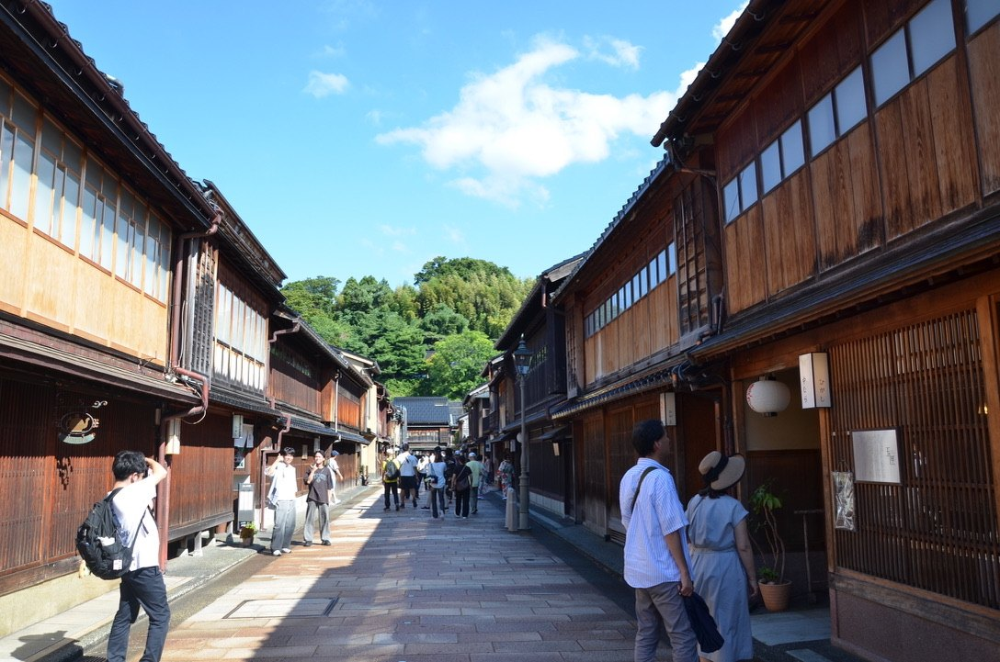

Piece Hostel Sanjo
Maps
京都・金沢おすすめマップ
Kyoto & Kanazawa maps by the staff of Piece Hostel Sanjo
叡山電鉄沿線 Along Eizan Railway Line
出町柳・一乗寺・貴船・鞍馬・先斗町 / 28 spots

金沢のおすすめと日帰り旅 Kanazawa & day trips
市内9か所・海鮮・日帰り6エリア